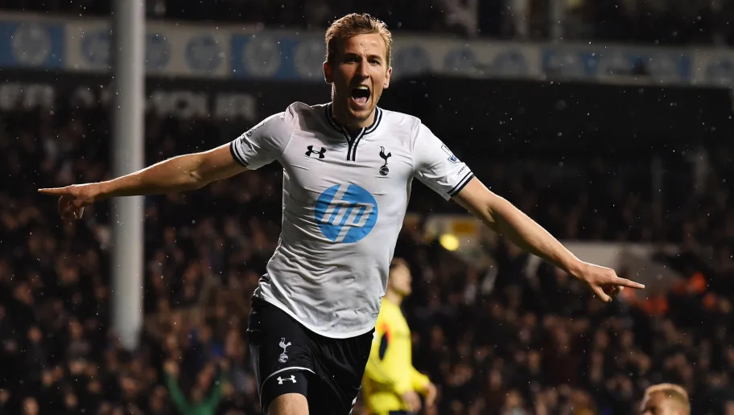
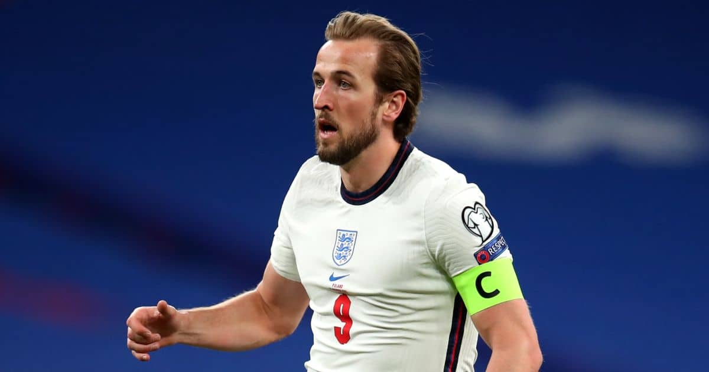

Harry is one of the best. I’ve told you before. He’s one of the best strikers of a ball. It’s maybe difficult to say he’s the best, but he’s one of the best
Mauricio Pochettino

Harry Edward Kane MBE - Tottenham Hotspur & England
Harry Edward Kane MBE is an English professional footballer who plays as a striker for Premier League club Tottenham Hotspur and captains the England national team. Regarded as one of the best strikers in the world, Kane is known for his
prolific goalscoring record and ability to link play.

Tottenham Hotspur
In his first full season at the club, Kane scored 31 goals across all competitions, was the Premier League's second-highest goalscorer, and was named PFA Young Player of the Year. For both the 2015–16 and 2016–17 seasons, Kane finished as the league's top goalscorer. In the latter season, he helped Tottenham finish as the competition's runners-up and won the PFA Fans' Player of the Year award. Kane registered his best campaign statistically to date in the 2017–18 season, with 41 goals scored in 48 games across all competitions, and in the following season, he finished as a runner-up in the UEFA Champions League. In February 2020, he became Tottenham's second-highest all-time goalscorer in official competitions.

England National Team
England’s striking talisman and captain has barely looked back since the moment he scored his first senior goal, just seconds into his debut as a Wembley substitute against Lithuania in March 2015.
Kane was named as Gareth Southgate's skipper ahead of the 2018 World Cup, having proved to be a vital part of the team both on and off the pitch since the manager first took charge in October 2016.
And he more than repaid the faith in Russia by helping to lead the Three Lions to the semi-finals and also bagging the Golden Boot award as top scorer with six goals at the competition.